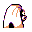

#124
Jynx
IcePsychic
It seductively wiggles its hips as it walks. It can cause people to dance in unison with it
Base stats Total 340
HP65
Attack50
Defense35
Speed95
Special95
Details
- Species
- Humanshape
- Height
- 4'07"
- Weight
- 90.0 lb
- Catch rate
- 45
- Base exp
- 137
- Growth
- Medium Fast
Level-up moves
LevelMoveType
StartTackleNormal
StartLovely KissNormal
Lv 9Powder SnowIce
Lv 15ConfusionPsychic
Lv 17Ice ShardIce
Lv 19SingNormal
Lv 23ScreechNormal
Lv 26Aurora BeamIce
Lv 30Ice PunchIce
Lv 37PsychicPsychic
Lv 38Ice BeamIce
Lv 46BlizzardIce
Evolution
Where to find
TM / HM
TM01 Mega PunchTM05 Mega KickTM06 ToxicTM07 Shadow BallTM08 Body SlamTM09 Take DownTM10 Double-EdgeTM11 BubblebeamTM12 Water GunTM13 Ice BeamTM14 BlizzardTM15 Hyper BeamTM17 SubmissionTM18 CounterTM19 Seismic TossTM29 PsychicTM30 TeleportTM31 MimicTM32 Double TeamTM33 ReflectTM34 BideTM35 MetronomeTM42 Dream EaterTM44 RestTM46 PsywaveTM50 SubstituteHM05 Flash